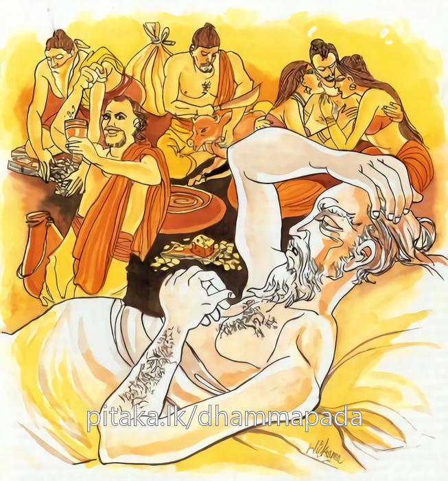
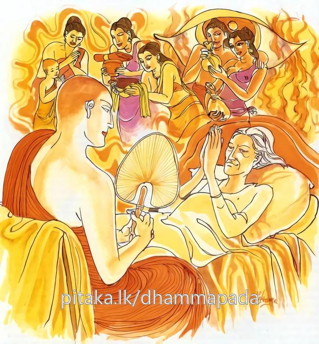

9-4 අනාථපිණ්ඩිකසිටානන්ගේ උදාර අදහස
මෙම කතාව ධම්මපද අටුවාවෙන් ද කියවන්න.
පාපො’පි පස්සති භද්රං යාව පාපං න පච්චති
යදා ච පච්චති පාපං අථ පාපො පාපානි පස්සති.
යම් තාක් කල් පුරුෂයා විසින් කරණ ලද අකුශල කර්මය මෙලොවැ හෝ පරලොවැ හෝ විපාක නො දේ ද, ඒ තාක් කල් පාපකර්මසමන්විත පුද්ගල ද යහපත දක්නේ ය (පාපී පුද්ගල ද පූර්වජන්මයෙහි කළ සුචරිත බලයෙන් වැඩ දක්නේ ය, සුව විඳුනේ ය. යම් කලෙක වනාහි ඔහු කළ පාපකර්මය දුෂ්ටධර්මවේද්ය ව එම ජන්මයෙහි හෝ උපපද්යවෙද්ය ව හෝ අපරාපර්යවේද්ය ව) විපාක දේ ද, එකල්හි පව් කළ පුද්ගල තෙම (මෙලොවැ වධබන්ධනාදියට ද පරලොවැ අපාය දුකට ද භාජන වීමෙන්) පාපඵලයන් දක්නේ ය.

භද්රො’පි පස්සති පාපං යාව භද්රං න පච්චති
යදා ච පච්චති භද්රං අථ භද්රො භද්රානි පස්සති.
යම් තාක් කල් පුරුෂයා විසින් කරන ලද කුශල කර්මය (මෙ ලොව හෝ පරලොවැ) විපාක නො දේ ද, ඒ තාක් කල් කුශලකර්මසමන්විත පුද්ගල ද (පුර්ව කර්මයෙහි කළ දුශ්චරිත බලයෙන් වන අකුශල විපාක වූ) අවැඩ දක්නේ ය (දුක් විඳුනේ ය). යම් කලෙක වනාහි ඔහු කළ සුචරිතය (මෙ ලොවැ ම හෝ පරලොවැ හෝ) විපාක දේ ද, එ කල්හි කුසල් කරණ සත්පුරුෂ තෙම (මෙ ලොවැ ලාභසත්කාරාදි සුව ද පර ලොවැ දෙව්සැපත් ආදි සුව ද අනුභව කරන්නේ) භද්ර වූ ඉෂ්ට විපාකයන් දක්නේ ය.

අනාථපිණ්ඩික සිටු තෙමේ ජේතවනමහාවිහාරය සඳහා සූපනස් කෙළක් ධනය වියදම් කෙළේ ය. බුදුරජානන් වහන්සේ එහි වැඩ හිඳින කල්හි සිටු තෙමේ දවසට තුන් විටක් උන්වහන්සේට උපස්ථානය පිණිස එහි යයි. යන්නේ ද, හිස් අතින් නො වේ. සාමණේරයෝත් නවක භික්ෂූන් වහන්සේලාත් විහාරයට එන සිටානන්ගේ ඉදිරියට ගොස් 'අපට කුමක් ගෙණ ආවෙහි දැ' යි විචාරත්. එහෙයින් සිටු තෙමේ කිසි දිනෙකත් සිස් අතින් විහාරයට නො ය යි. උදෑසන යතොත්, කැඳ අවුළුපත් ගෙන්වා ගෙන යයි. උදෑසන කෑමෙන් පසු යතොත්, ගිතෙල් උක්හකුරු වෙඬරු ආදි බෙහෙත් වර්ග ද, සවස් වරුවේ යතොත් මල් සුවඳ විලවුන් වස්ත්ර ආදිය ද ගෙන යන්නේ ය. සිටු තෙමේ මෙසේ නිතර දින පතා දන් දී සිල් සමාදන් ව ගෙණ වෙසෙ යි. මෙසේ පැවැති දන් දීම් ආදිය නිසා සිටු අත තුබූ මහා ධනස්කන්ධය අවසන් වී ගියේ ය. සිටු තෙමේ දිළිඳු වි ය. වෙළඳුන් විසින් සිටුගෙන් නයට ගෙන තිබූ මුදල අටළොස් කෙළක් වි ය. එ ද ඔහුට නො ලැබුනේ ය. වෙළෙන්දෝ නයට ගත් ඒ මුදල ආපසු නො දුන්හ. කුලසතු වූ එපමණ ම ධනය ගංඉවුරක නිදන් කොට තුබුනේ වතුරට ඉවුර යේ දී යෑමෙන් විනාශයට පත් වි ය. මේ නිසා සිටු තෙමේ මිල මුදල් අතින් පිරිහී ගියේ ය. දිළිඳු වි ය. එහෙත් ඔහු තමන් දෙන දන්, නො කඩ කොට ම දෙන්නේ ය. එහි පසු පසුබැමෙක් නො වී ය. දෙන්නේ ද, එදා මෙන් රසවත් ලෙසින් පිළියෙල කොට නො වේ. මෙදා ඔහු එසේ කිරීමෙහි, අපොහොසත් වි ය.
දිනෙක බුදුරජානන් වහන්සේ සිටු මෙසේ ඇමතූහ.
|
බුදුරජානන් වහන්සේ |
:- |
මහසිට! දැනුත් දන් දෙනු ලැබේ ද? |
|
සිටු තෙමේ |
:- |
එහෙයි, ස්වාමීනි! දෙනු ලැබේ. |
|
බුදුරජ |
:- |
හොඳට? |
|
සිටු |
:- |
අමාරුයි, ස්වාමීනි! එසේ කරණු. |
|
බුදුරජ |
:- |
එහෙනම්? |
|
සිටු |
:- |
දැන් දෙන්නේ යම්තමකට, කඩසාලේ බත්, කඩිහොදි, අමාරුකම නිසා එසේ දෙමි. |
|
බුදුරජ |
:- |
ගැහැවිය! එහෙත් දැන් කටුකලෙසට රළු ලෙසට දන් දෙමි, යි නො සිතව, ගැහැවිය! තුන් සිත පහදා බුද්ධාදිආර්ය්යයනට රළු දෙයක් දෙන ලද ද, එය රළු නො වේ, කටුක නො වේ. නීරස නො වේ. දෙන ලද්දේ ආර්ය්යය පුද්ගලයන්ට බැවින්, එහි කටුකබවෙක් රළුබවෙක් නීරස බවෙක් නො වේ මම පෙර වේලාම බමුණු ව උපන් කාලයේ, දඹදිව වැසි සියලු දෙනා කැඳවා මහදන් දුනිමි. එහෙත් එක දවසකුත් තිසරණයෙහි පිහිටි එකක්හට කිසිවක් දී ගත නුහුනෙමි, ඒ තරමට එදා ලෝකය දන් දීමට තරම් අයගෙන් තොර ව පැවැත්තේ ය, ඒ නිසා ඔබ දැන් දෙන මේ දානය කටුකය, රළුය, යි නො සිතව. |
සිටානන් ගේ ගෙයි දොරකොටුවෙහි එක් දෙව්දුවක් අරක් ගෙණ සිටියා ය. ඕ තොමෝ බුදුරජුන් හා උන්වහන්සේගේ ශ්රාවකයනුත් සිටානන්ගේ ගෙට ඇතුල් වන විට උන්වහන්සේලාගේ ආනුභාවයෙන් එහි සිටිනු නො හැකි ව දෙදරා යයි. “යම්ලෙසකින් මොවුහු මේ ගෙට නො එත් නම්, ඒ ලෙසට යමක් කියා මුන් හා සිටු බිඳුවා ලන්නෙමි” යි සිතා ඒ දෙව් දූ තොමෝ සිටානන්ගේ පොහොසත්කම නිසා, යමක් කියා ගත නො හී නිහඬ ව හුන්නී, දැන් සිටු දුප්පත් බැවින් මුන්ගේ මෙහි ඊම වළක්වන්නට යමක් කියමි යි සිටු නිදන කාමරයට ඇතුල් ව සිටානන්ට පෙනෙන සේ අහස සිටියා ය.
|
සිටු තෙමේ |
:- |
මේ කවුද? |
|
දෙව්දූ |
:- |
මහසිට! මම ඔබගේ සිවුවන දොරටුවේ අරක් ගෙණ ඉන්නා දෙව්දූ. |
|
සිටු |
:- |
කුමක් නිසා මෙහි ආවෙහි? |
|
දෙව්දූ |
:- |
ඔබට අවවාදයක් දෙන්නට. |
|
සිටු |
:- |
හා හොඳයි, මොකක් ද අවවාදය? |
|
දෙව්දූ |
:- |
මහසිට ඉදිරිය නො බලා ම ඔබ විසින් ශ්රමණ ගෞතමයන් උදෙසා මහත් මුදල් කඳක් වියදම් කරණ ලද්දේ ය, එහෙයින් ඔබ දැන් දුප්පත් ය, දැනුත් දිගින් දිගට ම එසේ කරණ බව පෙනේ, මෙසේ දිගින් දිගට ම මෙය කර ගෙණ ගියොත් වැඩි දවස් නො ගොස් ම තමුන්නාන්සේට හිඟමනට බසින්නට සිදු වනු ඒකාන්ත ය, ශ්රමණ ගෞතමයා ඔබට කුමක් කරන්නෙහි? ශ්රමණ ගෞතමයාටත් ඔහුගේ සව්වන්ටත් බත් බුලත් පිණිස වියදම් කරණ ඔය මුදල්කඳ යම්කිසි කර්මාන්තයක් පිණිස යොදන්න, එවිට දැන් වැටී සිටින ඔය අමාරුකම්වලින් මිදෙනු හැකි ය. |
|
සිටු |
:- |
මට තී දෙන අවවාදය. ඕක ද? |
|
දෙව්දූ |
:- |
මහසිට! එසේ ය. |
|
සිටු |
:- |
මෙතැනින් යව, තා වැනි දහසකටත් මා දෙන දන් වළකනු නො හැකි ය, තීගේ අවවාද මට නො රුස්නේ ය, තීගේ කීම්වලින් මට වැඩෙක් නො වේ, තී මෙහි විසීම මට හිත පිණිස නො වේ, එහෙයින් වහා ම මෙතැනින් බැහැර යව. |
සෝවන්මගට පැමිණ සිටි සිටානන්ගේ බස් අසා, එහි රැදී ගත නුහුනු දෙව්දූ තොමෝ දරුවනුත් ගෙණ ඉන් නික්ම ගියා ය. ගියා ද, වසන්නට තැන් නො ලැබ දුකට පත් ඕ තොමෝ “සිටු කමා කරවා එහි ම වසමි” යි නුවර අරක් ගත් දිව්යපුත්රයකු කරා ගොස්, තමන් කළ අපරාධය කියා “ස්වාමීනි! මා ගෙණ සිටු ලඟට ගොස් මා කෙරෙහි සිටු කමා කරවා, මා හුන් තැන ම වසන්නට ඉඩ ලබා දෙනු මැනැවැ” යි දන් වා සිටියා ය. එවිට දෙව්පුත් තෙමේ “තී කියන ලද අයුතු ය” යි කියා සිටු වෙත යෑමට නො හැකි ය, යි කී ය. ඉන් පසුබට නො වූ ඕ තොමෝ සිවු වරම් රජුන් වෙත ගියා ය. ඔවුහු ද එයට කන් නො දුන් හ. එවිට සක්දෙව් රජු කරා ගියා ය. ගොස් “දේවයන් වහන්ස! මට ඉන්නට තැනක් නැත, දවස් කිහිපයක් ම මේ දරුවන් ද අත එල්ලා ගෙණ පිහිටක් නො ලැබ ඇවිදීමි, ඔබ වහන්සේ මා කෙරෙහි කරුණා කරණු මැනැවි, මට ඉන්නට තැනක් ලබා දෙනු මැනැවැ” යි ඉල්ලා සිටියා ය.
ඉක්බිති සක්දෙව්රජ තෙමේ “තිට මම උපායයක් කියමි, එයට අනුව කටයුතු කරව” යි කීයේ ය. “දේවයන් වහන්ස! එසේ ය, වදාරනු මැනැවි, එසේ කරමි” යි ඕ තොමෝ කිවූ ය. සක්දෙව් තෙමේ “යව, තී ගොස් පළමු කොට සිටානන්ගේ මුදල්ලේකම් තැනගේ වේශය ගණුව. සිටානන් අතින් ලියවිලි පිට මුදල් නයට ගත් වෙළෙන්දෝ බොහෝය, ඒ මුදල අටළොස් කෙළෙකි, තීගේ ආනුභාවයෙන් ඒ මුදල් ගෙන්වා හිස් ව තිබෙන ගබඩා පුරවාලව, නිදන් කොට තිබූ, දිය පහරින් මූදුබත් වූ මුදලත් අටළොස් කෙළකි, එය ද ගෙණැවිත් එහි ම තැන්පත් කරව, අසුවල් තැනත් එපමණ ම මුදල් තිබේ, එයට හිමිකම් කියන්නෙක් නැත, එහෙයින් ඒ මුදලත් ගෙණැවිත් සිටුගේ හිස් ගබඩාව පුරවාලව, තී කළ වරදට දඬුවම් වසයෙන්, මේ සියලු මුදල් ගෙණැවිත් තබා, සිටු කමාකර ගණුව” යි කීයේ ය.
දෙවිදූ සක් දෙවිඳුන් කීලෙසට ඒ සියලු ධනය ගෙණැවිත් ගෙයි ගබඩාවන්හි පුරවා එහි ම අහස බබල බබලා සිටියා ය. ඒ දුටු සිටානන් “මේ කවරෙක් දැ?” යි ඇසූ විට, “මහසිට! මම ඔබගේ සිවුවන දොරටුවේ අරක් ගෙණ සිටි නුවණමඳ දෙවිදූ වෙමි, නුවණ මඳකමින් මා විසින් ඔබ ඉදිරියේ දී කියන ලද්දට මට කමා වන්න, සක් දෙවිඳුන්ගේ නියමයෙන් මම සිවුපනස් කෙළක් ධනය ගෙණැවිත් ඔබගේ හිස් ගබඩා පිරවීමි, එසේ කරන ලද්දේ, මා කී වැරදිකතාවට දඬුවම් පිණිස ය, මෙතැනින් ගිය දා සිට, ඉන්නට තැනක් නො ලැබීමෙන් වෙහෙසට පත්ව සිටිමි, ඒ නිසා මට කමා වන්නැ” යි දෙව්දූ කිවූ ය.
ඉක්බිති සිටු තෙමේ “මේ දෙව්දූ තමන් කළ වරදට දඬුවම් විඳිබව කියා තමන් කළ වරද ද පිළිගණී යි, ඒ නිසා බුදුරජුන් වෙත කැඳවා ගෙණ යා යුතු ය” යි ඇය බුදුරජුන් වෙත කැඳවා, ගෙණ ගොස් තී කළ සියල්ල බුදුරජානන් වහන්ට සැලකරව යි කීයේ ය. එවිට දෙව්දූ තොමෝ බුදුරජුන් පාමුල හිස තබා, “ස්වාමීන් වහන්ස! නුවණ මද වූ මම ඔබ වහන්සේගේ ගුණ නො දැන වැරදි කතාවක් කෙළෙමි, එයට මට කමාවනු මැනැවැ” යි පළමු කොට බුදුරජුන් කමා කරවා දෙවැනි ව සිටානන් කමා කරවා ගත්තේ ය.
එවිට බුදුරජානන් වහන්සේ කුසල් අකුසල් දෙක්හි ඉෂ්ටානිෂ්ට විපාකයන් දැක්වීමට සිටානන්ටත් දෙව්දුවටත් බණ වදාරන සේක් “ගැහැවිය! මේ ලෝකයෙහි පාපිෂ්ඨ තෙමේ තමන් කළ පාපකර්මය, අනිෂ්ට විපාක දෙනතුරු, පෙර කළ කුශල කර්මයන්ගේ වසයෙන් ඉෂ්ටවිපාක විඳින්නේ ය. යම් විටෙක, පාපකර්මය විපාක දෙන්නට පටන් ගත්තේ නම්, පාපකාරී පුද්ගල තෙමේ එවක් පටන් අනිෂ්ට විපාකයක් ම විඳින්නේ ය. එසේ ම පින් කරන්නේ ද කළ කුශලකර්මය ඉෂ්ටවිපාක දෙන තුරු, පෙර කළ අකුශල කර්මයන්ගේ වශයෙන් දුඃඛවිපාකයක් ම විඳින්නේ ය, ලබන්නේ ය. යම් විටෙක ඔහු කළ කුශලකර්මය, විපාක දීමට ඉඩ ලැබ විපාක දෙන්නට පටන් ගත්තේ නම්, එවක් පටන් යහපතක් ම දක්නේ ය” යි වදාරා අනුසන්ධි ගළපා. මේ ධර්මදේශනාව කළ සේක:
පාපොපි පච්චති භද්රං යාව පාපං න පච්චති,
යදා ච පස්සති පාපං අථ පාපො පාපානි පස්සති.
.
භද්රොපි පස්සති පාපං යාව භද්රං න පච්චති,
යදා ච පච්චති භද්රං අථ භද්රො භද්රානි පස්සතී’ති.
යම් තාක් පව නො පැසේ ද, (ඒ තාක්) පාපයා ද යහපත දකියි. යම් කලෙක පව පැසේ ද, එකල පාපයා පව්පල දකි යි.
යම් තාක් පිණ නො පැසේ ද, (ඒ තාක්) පින් කළ තැනැත්තේ ද අයහපත දකි යි. යම් කලක පිණ පැසේ ද, එකල පින් කළ තැනැත්තේ යහපත දකි යි.
පාපො අපි පස්සති භද්රං = පාපයා ද යහපත දකි යි.
පව් ඇත්තේ, පවින් යුක්ත වුයේ පාප නම්. ‘ කාය දුච්චරිතාදිනා පාපකම්මෙන යුත්තපුග්ගලො’ යනු, පාපො යන්නට කළ අටුවා ය.
පවින් යුත් තැනැත්තේ ද, පව් කම් කරන්නේ ද, පෙර සසර කරණ ලද පින් බලෙන් උපන් සැපය වළඳන්නේ යහපත දකි යි. සසර, ජාතියෙන් ජාතියට ඉපද මැරී යන සත්ත්වයාගේ සසර සැරිසැරීම, කවදා පටන් ගැණුනේ ද යනු, නො දත හැකි ය. එහි කොනක් නැති බැවිනි. ඉමක් නැති කලක පටන් ඒ ඒ අත්බව්හි ඉපද එන සත්ත්ව තෙමේ එසේ එන්නේ ද, නිකම් නො වේ. සිස් අතින් නො වේ. කය වචන සිත යොදා මෙහෙයා නානාවිධකර්ම රැස් කරමින් ය එන්නේ. ඒ කර්මගණයෙහි කුශලකර්මත් ඇත. අකුශලකර්මත් ඇත. විපාක නො දුන් ඒ කර්ම, කර්ම කළහු ලුහුබැඳ එයි. පසු පස එයි. එහෙයින් අනුගාමික වේ. කළ අත්බවේ දී විපාක දුන් කර්මයට වඩා බලගතු කර්ම අනාගත භවයන්හි දී විපාක දීමට ඉතිරි වී ඇත්තේ ය. දැන් මේ අත්බවේදී පව්කම් කරන්නේ ද, යටගිය බවයන්හි කළ කුශල කර්මය වශයෙන් යහපත දකි යි.
යාව පාපං න පච්චති = යම් තාක් පව නො පැසේ ද. විපාක නොදේ ද.
පාපයා, පෙර කළ පින් බෙලෙන් මෙලොව දී සැප විඳින්නේ ඔහු විසින් මෙලොව දී කළ පව්කම, මෙලොව දී හෝ පරලොව දී විපාක දෙන තුරු පමණෙකි. රා අරක්කු පෙරණ විකුණන, සතුන් මස් පිණිස විකුණන මරණ, ගණිකා මඩම් තබන තබවන, මිනිස්සු අද සමාජයෙහි ධනවත් ව නන් වැදෑරුම් පස්කම් සැප විඳිති. එහෙත් ඔවුහු මෙලොව මෙසේ පව්කම් කරන බැවින් පාපයෝය. මොවුන් මේ විඳුනා පස්කම් සැපය පවත්නේ මොවුන් දැන් කරණ මේ පව් කම් විපාක දෙන තුරු පමණෙකි.
පච්චති යනු, ක්රියාපදයි. කුශලකර්මයන්ගේ විපාකය එයින් කියත්. පලදීම කියත්.
යදා ච පච්චති පාපං = යම් කලෙක පාපය විපාක දේද.
පාපයා විසින් කළ පව්කම, යම්කලෙක දිට්ඨධම්මවේදනීය වසයෙන් මෙලොව දී හෝ, උපපජ්ජ -අපරාපරිය වේදනීය වසයෙන් පරලොව හෝ විපාක දේ ද (ඒ වනතුරුය).
අථ පාපො පාපානි පස්සති = එකල්හි පාපයා පව්පල දකි යි.
පව් කළ තැනැත්තේ මෙලොව නොයෙක් වධබැඳුම් වලට ද, පරලොව අපායදුඃඛයට ද වැටෙන්නේ ය. හසු වන්නේ ය. ඒකාන්තය.
පව් කරණ මිනිසා තමන් කළ පාපකර්මය, විපාක දෙන තුරු මෙලොව සැප විඳින්නේ, පෙර අත්බැව්හි කළ කුශල කර්මයන්ගේ ශක්තියෙනි. යම් කලෙක දිට්ඨධම්මවේදනීය වසයෙන් මෙලොව ම හෝ උපපජ්ජවේදනීය අපරාපරියවේදනීය වසයෙන් පරලොව හෝ තමන් කළ අකුශලකර්මය පැසෙන විට දුක් විඳින්නේ ය.
භද්රො අපි පස්සති පාපං = පින් කළ තැනැත්තේ ද අයහපත දකියි.
කායසුචරිතාදි කල්යාණකර්ම ඇත්තේ, කල්යාකර්මයෙන් යුක්ත වුයේ භද්ර නම්. ‘කායසුචරිතාදිභෙදභද්රකම්මයුත්තො භද්රො’ යනු එයට කළ අටුවා ය.
යාව භද්රං න පච්චති = යම් තාක් පින්කම් නො පැසේ ද.
පින් කළ තැනැත්තේ, පෙර කළ අකුසකම් බෙලෙන් මෙලොව දුක් විඳිනුයේ, මෙලොව දී කළ පින්කම් මෙලොව දී හෝ පරලොව දී විපාක දෙන තුරු පමණි.
යදා ච පච්චති භද්රං = යම් කලෙක පින්කම පැසේ ද.
පින් කළහුට කුශලකර්මය, දිට්ඨධම්මවේදනීය වසයෙන් මෙලොව ම හෝ උපපජ්ජවේදනීය - අපරාපරියවේදනීය වසයෙන් පරලොව හෝ විපාක දෙන තුරු, පෙර කළ අකුසල්කම්වල දුක්ඛ විපාකය විඳින්නට සිදු වන්නේ ය.
අථ භද්රො භද්රානි පස්සති = එකල්හි පින් කළ තැනැත්තේ යහපත දකියි.
පින් කළේ මෙලොව ලාභසත්කාරාදිසුඛය ද පරලොව දිව්යසම්පත්ත්යාදිසුඛය ද විඳින්නේ, යහපත දක්නේ ය.
පින් කරන්නේ, තමන් මෙලොව කළ කුසල් පල දෙන තුරු පෙර කළ අකුසලබලෙන් දුකට වැටෙන්නේ ය. යම් විටක තමන් කළ කුශලකර්මය, මෙලොව දී හෝ පරලොව දී විපාක දෙන්නේ ද, එවිට කායිකචෛතසික සුඛයට භාජන වන්නේ ය.
ධර්මදේශනාවගේ අවසානයෙහි දෙව්දූ තොමෝ සෝවන් පලයෙහි පිහිටියා ය. දේශනාව පැමිණ සිටියවුනට වැඩ සහිත වූ ය.
අනාථපිණ්ඩිකශ්රේෂ්ඨී වස්තුව නිමි.